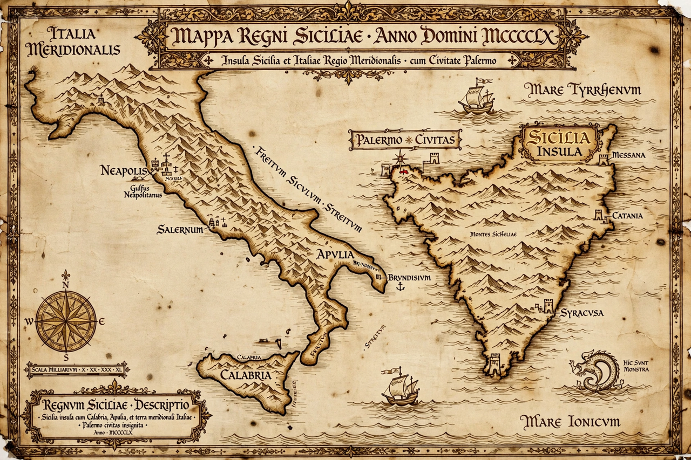

| Kingdom of Sicily | |
|---|---|
 The Norman kingdom at its height, 12th century | |
| Founded | 1130 (coronation of Roger II) |
| Capital | Palermo |
| Dynasties | Hauteville, Hohenstaufen, Angevin, Aragonese |
| Ended | 1816 (merged into the Kingdom of the Two Sicilies) |
The Kingdom of Sicily (Latin: Regnum Siciliae) was a state that existed in the south of the Italian peninsula and for a time on the island of Sicily from its founding by Roger II in 1130 until 1816. It was a successor state to the County of Sicily founded by Roger I in 1071 during the Norman conquest of southern Italy. At its height under the Hauteville kings the kingdom included Sicily, Malta, Calabria, Apulia and Campania, and briefly held territory in North Africa.
Roger II united the Norman possessions of southern Italy and was crowned king in Palermo Cathedral on Christmas Day 1130. His court became famous for its fusion of Norman, Byzantine and Arab culture and administration: Greek and Muslim officials served alongside Latin ones, and monuments such as the Cappella Palatina and Monreale Cathedral combined Byzantine mosaics, Islamic muqarnas ceilings and Romanesque architecture. His Constitutions of Melfi for the mainland and the Assizes of Ariano created one of medieval Europe's most centralised administrations.
Through the marriage of Constance to Henry VI the kingdom passed to the Hohenstaufen; Frederick II made it a hub of law, science and poetry in the 13th century. After the Sicilian Vespers revolt of 1282 the island passed to Aragon while the mainland kingdom continued under the Angevins as the Kingdom of Naples. The island kingdom endured under Aragonese and then Spanish viceroys, passed to Savoy and Austria in the early 18th century, then to the Bourbons, and in 1816 was merged with Naples to form the Kingdom of the Two Sicilies.